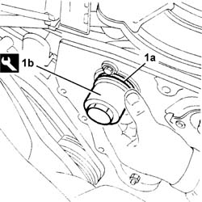

1036G30 front oil seal of camshaft of one l/h or r/h top head - replace with timing belt removed
- Path
- Procedures > 10 ENGINE > 1036 TIMING SYSTEM > 1036G camshaft (1) in top heads (2) > 1036G30 front oil seal of camshaft of one l/h or r/h top head - replace with timing belt removed
- Kind
- repair procedure (removal / refitting; the operation number is the code)
- Applies to
- all engines; all production periods
- Interactive page
- https://sloeber94.github.io/elrnDB-fDbl/en/#/2584350
Applies to: all engines; all production periods
 Removing
Removing
 Refitting
Refitting1032B40 toothed-driven pulley (one) - r + r with timing belt removed
Remove the front oil seal for the camshaft from the camshaft housing.
Applies to: all engines; all production periods
Refitting
Removing1. Place a new camshaft front oil seal for the camshaft housing (1a) back in its housing using the tool (1b).
 | Name | Country |
|---|---|---|
1b | Fitting tool | 1.860.882.000 |

Applies to: all engines; all production periods
1032B40 toothed-driven pulley (one) - r + r with timing belt removed